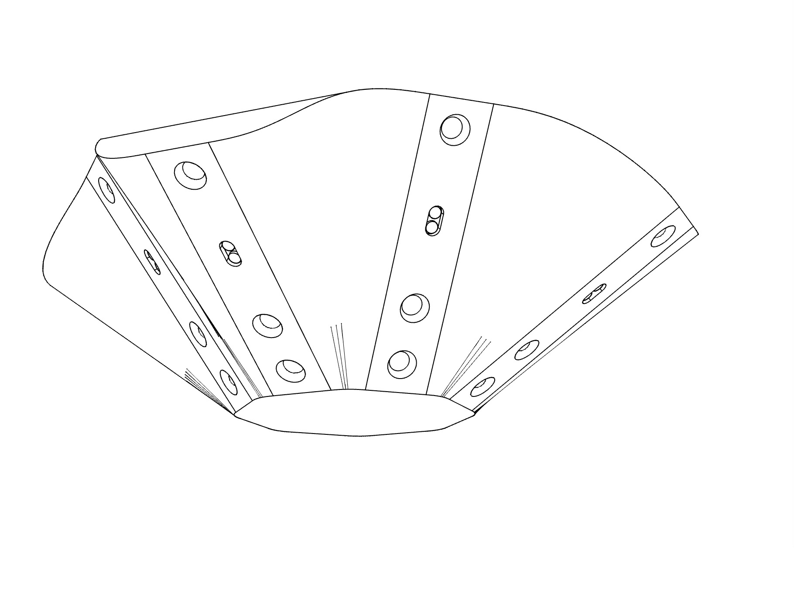
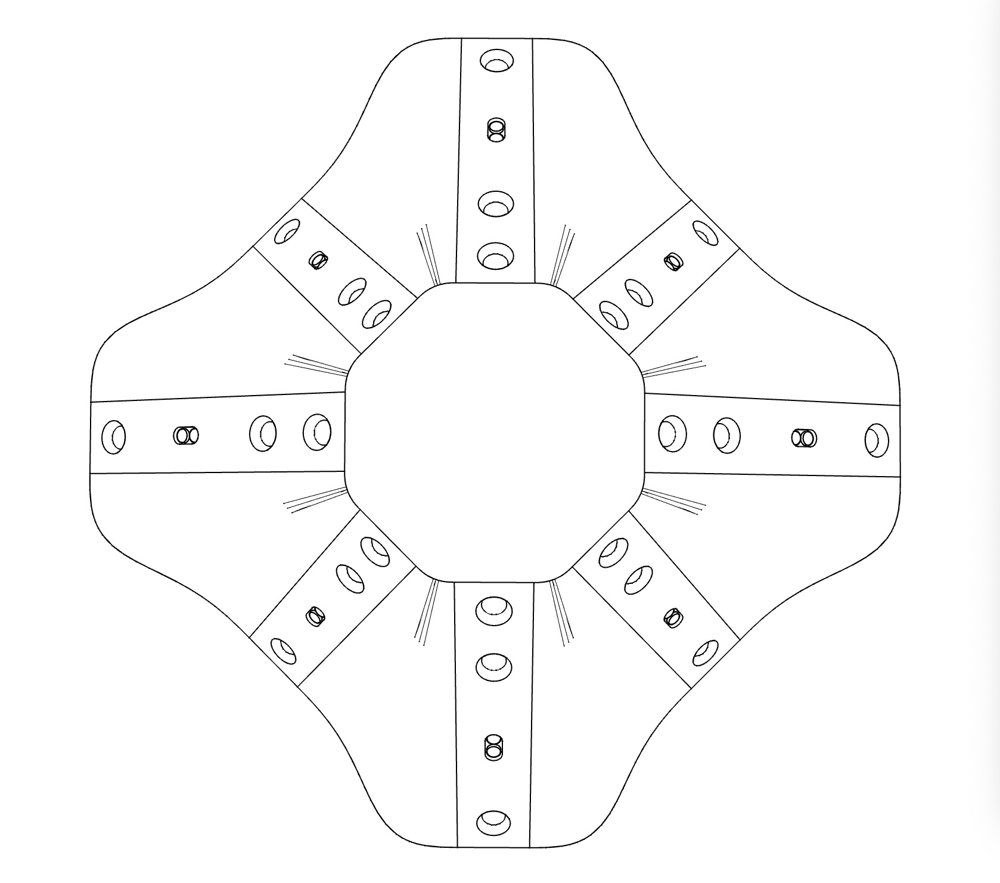
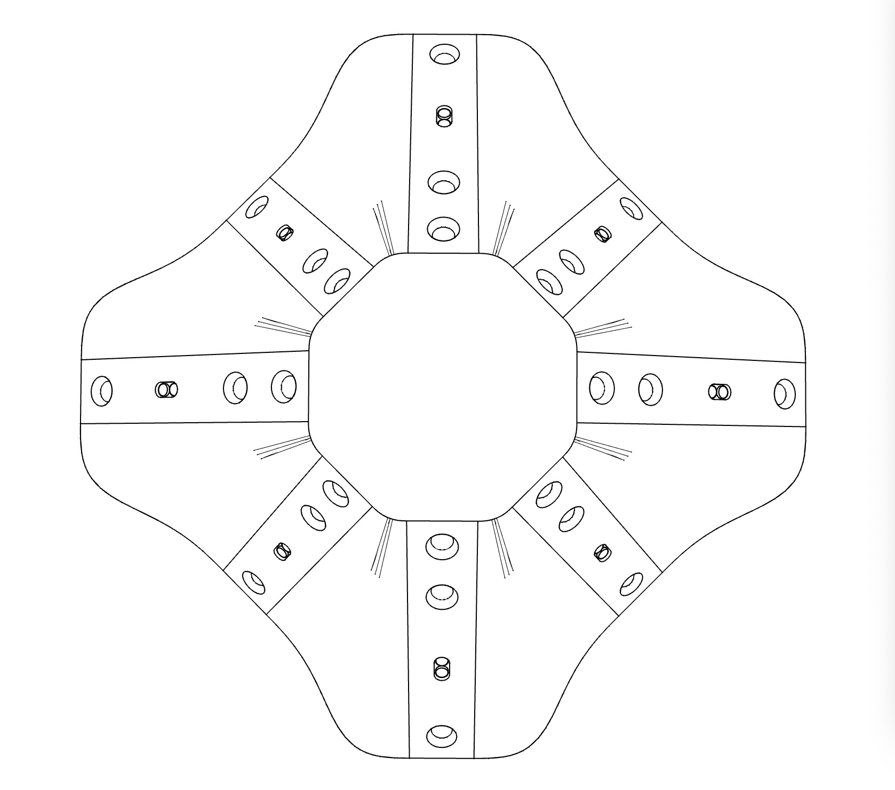
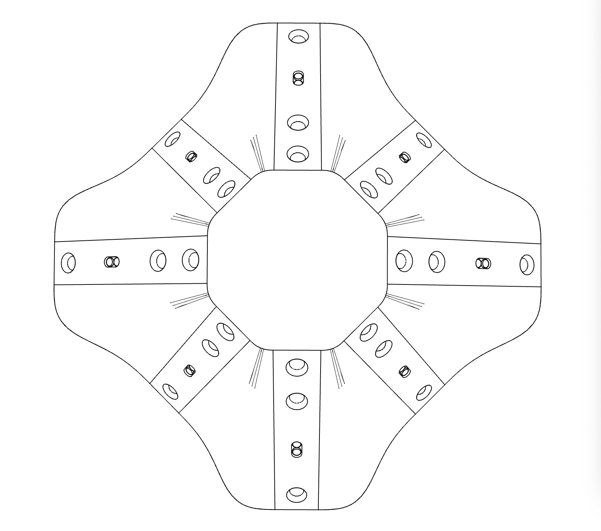
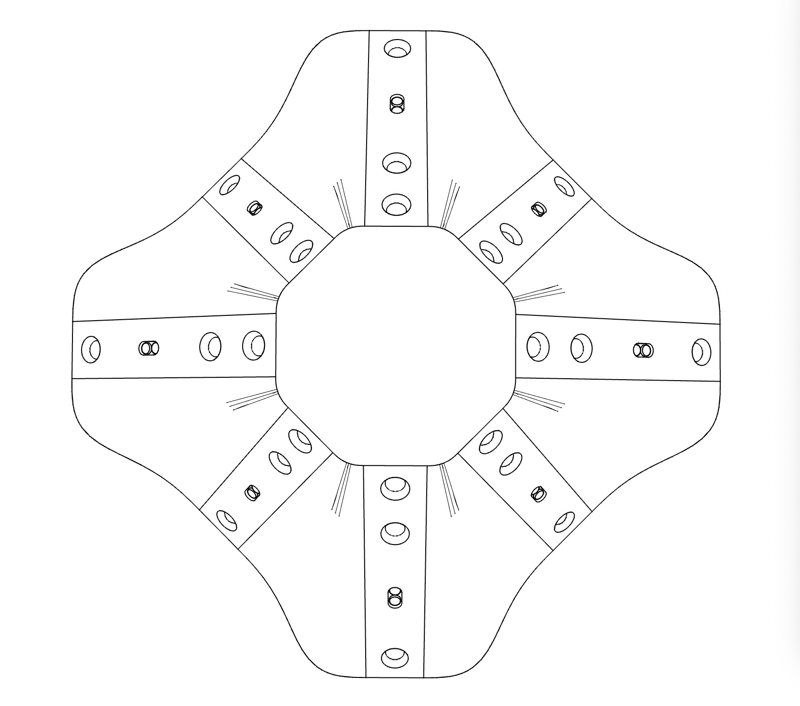

Top

Bottom
Left

 



ACADEMIC 1

ACADEMIC 2
TECH BLOG
DESIGN
DESIGN 2
PRODUCT
The combination of eye and head movements plays a major part in our visual process. The neck provides mobility for the head motion and also limits the range of visual motion in space. In this paper, a robotic neck augmentation system is designed to surmount the physical limitations of the neck. It applies in essential a visuomotor modification to the vision-neck relationship. We conducted two experiments to measure and verify the performance of the neck alternation. The multiple test results indicate the system has a positive effect to augment the motions of vision. Specifically, the robotic neck can enlarge the range of vision motion to 200%, and influence the response motion, by overall 22% less in time and 28% faster in speed.
眼睛和头部的组合运动作为很重要的一部分参与到视觉处理中。颈部为头部运动提供了灵活性，但同时也限制了视觉运动在空间中的范围。在这篇论文中，一个机械颈部增强系统被设计用于克服颈部的物理限制。它本质上对视觉-颈部关系施加了视觉-运动协调修改。我们进行了两个实验来测量和验证颈部替换系统的性能。多项测试结果都显示此系统对增强视觉运动有正面效果。具体地说，此机械颈部能增大视觉运动范围到200%，同时影响视觉响应运动，总体上时间缩短22%，速度增快28%。


Lichao Shen, MHD Yamen Saraiji, Kai Kunze, Kouta Minamizawa, and Roshan Lalintha Peiris. 2020. Visuomotor Influence of Attached Robotic Neck Augmentation. In Symposium on Spatial User Interaction (SUI '20). Association for Computing Machinery, New York, NY, USA, Article 14, 1–10. DOI:https://doi.org/10.1145/3385959.3418460